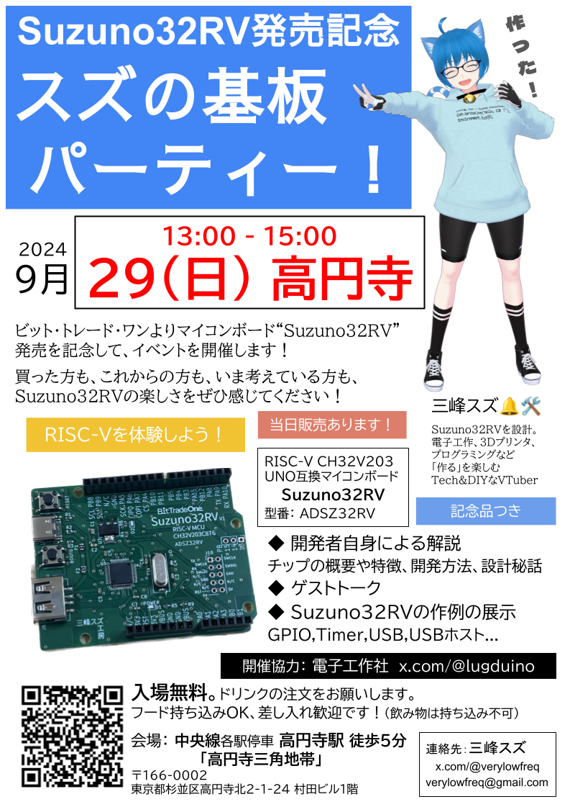

Suzuno32RV製品化・発売記念イベント！
わたし三峰スズが開発してきたCH32V搭載ArduinoUNO互換マイコンボード "Suzuno32RV" が、ビット・トレード・ワンさまより発売されることになりました！
RISC-Vを体験しよう！CH32V搭載ArduinoUno互換ボード Suzuno32RV 9/27発売！ - BitTradeOne
製品化と発売を記念して、イベント「スズの基板パーティー！」を開催します！
日時： 2024年9月29日（日曜） 13:00-15:00
場所： 「高円寺三角地帯」 中央線各駅停車 高円寺駅 徒歩5分 詳細なアクセスはこちら
料金： 入場無料です。ドリンクの注文をお願いします。なおフードは持ち込み自由、差し入れも歓迎です。（飲み物の持込はご遠慮ください）
内容： 開発者による解説、ゲストトーク、Suzuno32RVを使った作例展示。
製品の当日販売もあります。記念品もあり。

会場へのアクセス
中央線 各駅停車 高円寺駅 徒歩5分「高円寺三角地帯」。「座・高円寺」のすぐ先です。
イベント当日の日曜日は中央線快速電車は高円寺駅に止まりませんので、ご注意ください。
連絡先 / Contact
Twitter (@verylowfreq) のダイレクトメッセージへお願いします。またはEメール verylowfreq あっと gmail.com も可能です。